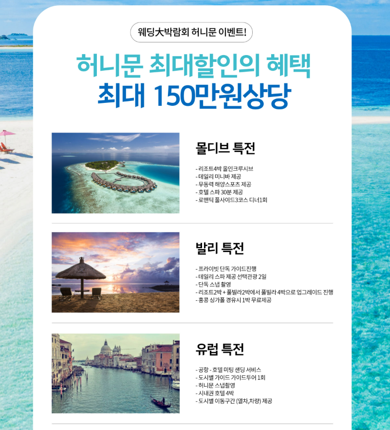
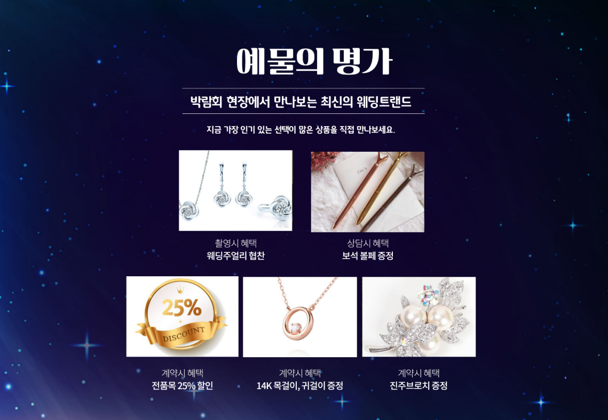

결혼 준비를 시작하면 웨딩홀과 스튜디오, 드레스, 메이크업, 예물과 예복, 혼수까지 여러 항목을 동시에 알아보게 됩니다. 수원 갤러리아 웨딩박람회를 방문하기 전 희망 예식 시기와 지역, 예상 하객 수, 전체 예산을 정리해두면 필요한 상담을 효율적으로 받을 수 있습니다. 수원뿐 아니라 광교와 용인, 동탄 등 경기 남부 지역의 조건도 함께 살펴보면서 이동 거리와 하객 접근성, 주차, 예식 시간대까지 비교하는 것이 좋습니다.
희망 날짜, 지역, 하객 수와 전체 예산 범위를 미리 정리하세요.
기본 가격만 보지 말고 실제 포함 서비스와 추가금을 확인하세요.
일정 변경, 계약 취소, 환불 조건이 서면에 있는지 확인하세요.
수원 갤러리아 웨딩박람회에서는 무엇을 확인할까요?
웨딩박람회에서는 결혼 준비 과정에서 필요한 다양한 분야의 정보를 한자리에서 살펴보고 비교해볼 수 있습니다.
수원과 인근 경기 남부 지역에서 예식을 준비하고 있다면 희망하는 일정과 예산을 기준으로 필요한 준비 항목을 정리하면서 자신에게 맞는 결혼 준비 방향을 살펴볼 수 있습니다.
여러 업체의 상담을 한자리에서 받을 수 있다는 장점이 있지만, 현장에서 안내되는 할인이나 혜택만으로 결정하기보다는 웨딩홀의 보증 인원과 식대, 스드메의 선택 범위와 추가금, 계약 변경과 취소 조건까지 같은 기준으로 비교해야 합니다.
상담을 많이 받는 것보다 두 사람이 우선적으로 결정할 항목을 정하고, 같은 질문으로 여러 업체를 비교하는 것이 중요합니다.
웨딩홀과 스드메 등 결혼 준비 항목을 비교해보세요
결혼 준비에는 웨딩홀부터 스튜디오, 드레스, 메이크업까지 여러 분야의 선택이 필요합니다. 여기에 예물과 예복, 혼수 준비까지 더해질 수 있어 각 상품의 구성과 조건을 함께 비교하는 것이 좋습니다.
웨딩홀은 희망 날짜와 최소 보증 인원, 식대와 대관료를 확인하고, 스드메는 촬영 원본·수정본 제공 여부, 드레스 등급, 메이크업 담당자 지정 등 최종 비용에 영향을 주는 항목까지 살펴보세요.

💒 웨딩홀
예식 지역과 날짜, 예상 하객 수를 기준으로 원하는 조건을 비교해보세요.
👰 스드메
스튜디오와 드레스, 메이크업 구성 및 추가 선택사항을 확인해보세요.
💍 예물·예복
필요한 품목과 선호하는 스타일, 예상 예산을 미리 생각해보세요.
🏠 혼수 준비
신혼생활에 필요한 품목을 우선순위에 따라 정리해보세요.
방문하기 전에 필요한 상담 내용을 정리해보세요
웨딩박람회에서 여러 정보를 효율적으로 확인하려면 방문 전에 두 사람이 원하는 결혼식의 방향을 미리 정리하는 것이 좋습니다.
예식 날짜와 지역, 예상 하객 수와 전체적인 예산을 정리해두면 여러 업체의 상담 내용을 비교할 때 기준을 잡는 데 도움이 됩니다.
계약 전에는 상품 구성과 추가 비용을 확인하세요
웨딩 관련 상품은 안내되는 기본 가격만으로 비교하기보다 실제 계약에 포함되는 구성과 선택 옵션에 따른 추가 비용을 함께 확인하는 것이 좋습니다.
일정 변경과 계약 취소 및 환불 조건 등도 확인하고 안내받은 내용이 실제 계약서에 정확하게 기재되어 있는지 살펴보세요.
당일 계약 혜택이 안내되더라도 적용 대상과 유효기간, 제휴카드나 특정 업체 이용 조건이 있는지 확인해야 합니다. 구두로 안내받은 서비스와 사은품도 계약서나 별도 확인서에 기재되어 있어야 나중에 조건을 다시 확인하기 편리합니다.

수원 갤러리아 웨딩박람회 상담 순서를 미리 정해보세요
여러 상담을 연속으로 진행하면 업체별 조건이 섞이기 쉽습니다. 예식 날짜와 지역을 결정하는 웨딩홀 상담을 먼저 진행하고, 촬영과 본식 일정에 맞춰 스드메, 예물·예복, 혼수 순서로 확인하면 전체 일정을 정리하기 편리합니다.
웨딩 상품은 최종 결제금액을 기준으로 비교하세요
웨딩 상품은 기본 가격이 비슷해 보여도 포함 서비스와 선택 가능한 범위가 달라 최종 비용에서 차이가 날 수 있습니다. 할인 금액이나 월 납부금만 보기보다 필수 추가금을 포함한 전체 금액을 기준으로 비교하는 것이 좋습니다.
| 웨딩홀 | 식대, 대관료, 최소 보증 인원, 부대시설과 주차 비용을 확인합니다. |
|---|---|
| 스튜디오 | 촬영 콘셉트, 의상 수, 원본·수정본 제공과 추가 촬영 비용을 확인합니다. |
| 드레스 | 기본 선택 범위, 상위 등급 추가금, 피팅 횟수와 액세서리 포함 여부를 비교합니다. |
| 메이크업 | 촬영·본식 포함 횟수, 담당자 지정, 얼리 스타트와 출장 비용을 확인합니다. |
| 계약 조건 | 계약금, 잔금 일정, 업체 변경 비용, 일정 변경과 취소·환불 기준을 확인합니다. |